Uma lâmina de mama corada em H&E tem dezenas de milhares de pixels de lado. A pipeline a reduz, em cinco estágios, a um texto curto que um modelo de linguagem pequeno, rodando localmente, transforma num rascunho de pré-laudo; uma etapa nova decide a classe da lâmina inteira. Abaixo, cada estágio com o que faz, o que foi testado e o que os números mostram.
Todo teste tem regra e critério de sucesso fixados e registrados em commit antes de rodar, e é avaliado em lâminas que o método não viu.
| Conjunto | O que é | Uso |
|---|---|---|
| BRACS | 547 lâminas de mama, 4.537 regiões anotadas em 7 classes (N, PB, UDH, FEA, ADH, DCIS, IC) | 18 lâminas de desenvolvimento, 61 da validação oficial e 57 do teste oficial; 3.655 regiões de treino para treinar o descritor |
| BACH | Imagens de microscopia de outra instituição (Porto): 100 in situ, 100 invasivo | teste de generalização |
| TCGA (pulmão) | Lâminas de diagnóstico de adenocarcinoma (LUAD) e carcinoma escamoso (LUSC) de pulmão, acesso aberto | 200 lâminas sorteadas (120 treino, 80 teste) para testar a generalização a outro órgão |
| TCGA (rim) | Lâminas de diagnóstico de carcinoma renal de células claras (KIRC), papilífero (KIRP) e cromófobo (KICH), acesso aberto | 300 lâminas sorteadas (100 por subtipo), com treino e teste em hospitais diferentes |
| Pulmão (orientador) | Dataset do orientador, não público: 52 pacientes (25 adenocarcinoma, 27 epidermoide), 1.647 campos de biópsia H&E e 5.593 núcleos isolados recortados desses campos | testar se o subtipo está no núcleo ou no tecido em volta (validação cruzada por paciente) |
| LungHist700 | 691 imagens de microscópio de pulmão (normal, adenocarcinoma, carcinoma escamoso) de 45 pacientes | treinar o descritor por patch do pulmão |
| PANDA | Biópsias de próstata com grau ISUP 0–5 e máscara de rótulos, de dois centros (Radboud e Karolinska) | 900 biópsias sorteadas (600 treino no Radboud, 300 teste no Karolinska) para testar uma tarefa de graduação |
| NuCLS | 1.744 campos de mama do TCGA, ~59 mil núcleos classificados por patologista | validar a segmentação de núcleos |
Separa tecido de fundo branco pela saturação da cor (limiar de Otsu e operações morfológicas). Só patches com pelo menos 50% de tecido seguem.
A exceção (38%) é uma lâmina normal em que a caixa retangular da anotação envolve muito estroma claro em volta de um lóbulo pequeno.
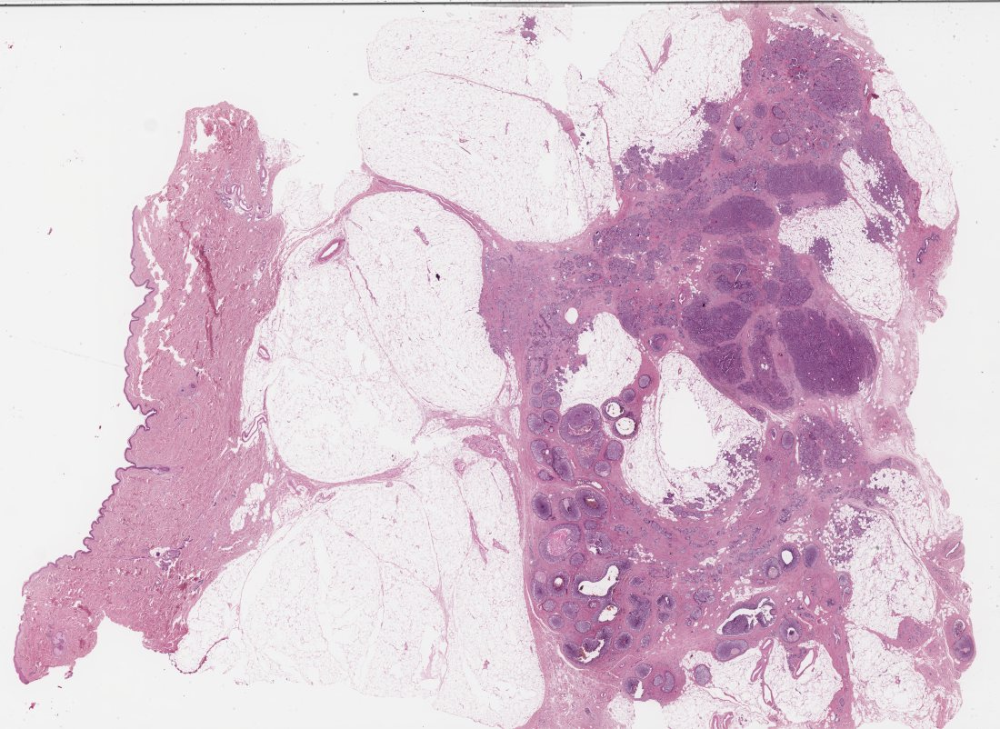
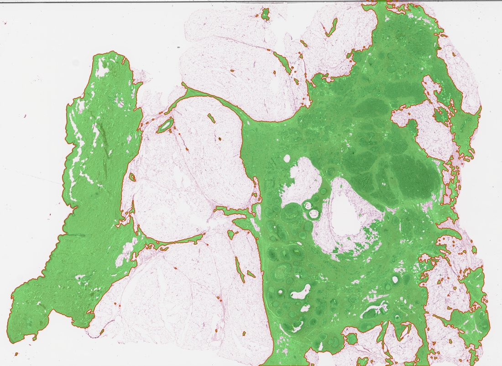
BRACS_748 patches no nível de 40x: 41.001 patches com ≥ 50% tecido: 15.138 (descarta 63% da área) regiões anotadas cobertas: 98 de 98 (cobertura média 96%)
Descrever milhares de patches geraria texto demais. O roteador pontua cada patch e escolhe os 32 mais relevantes, mantendo pelo menos 192 µm entre eles para não ficarem todos no mesmo foco.
Medido pelas regiões anotadas, o roteador parecia fraco (precisão ~0,2), porque as anotações não marcam toda a lesão. Contando os núcleos tumorais de cada patch escolhido, sem depender das anotações, ele funciona bem nas lâminas malignas.
Em lâminas benignas e atípicas ainda não há uma métrica boa para o roteador.
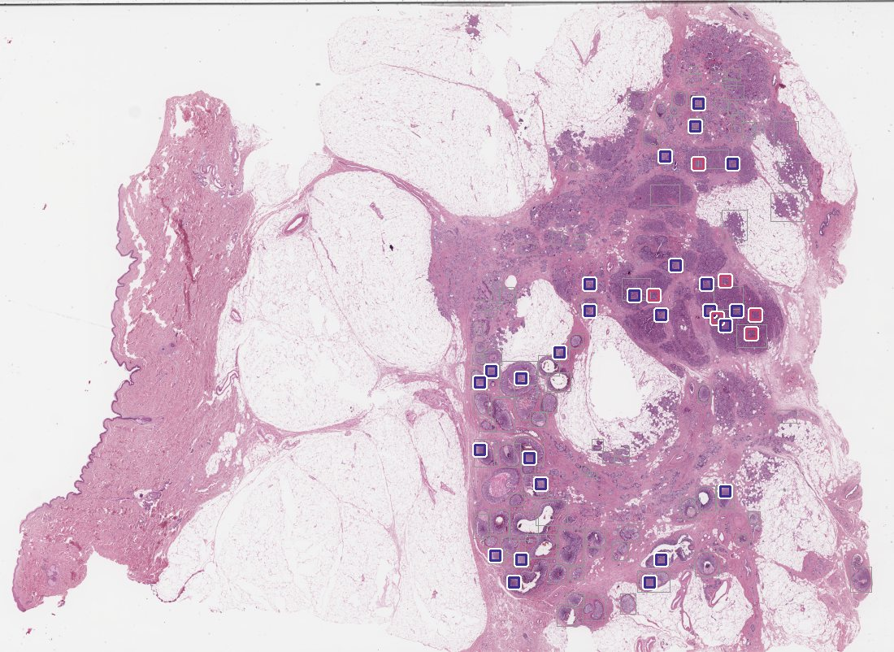
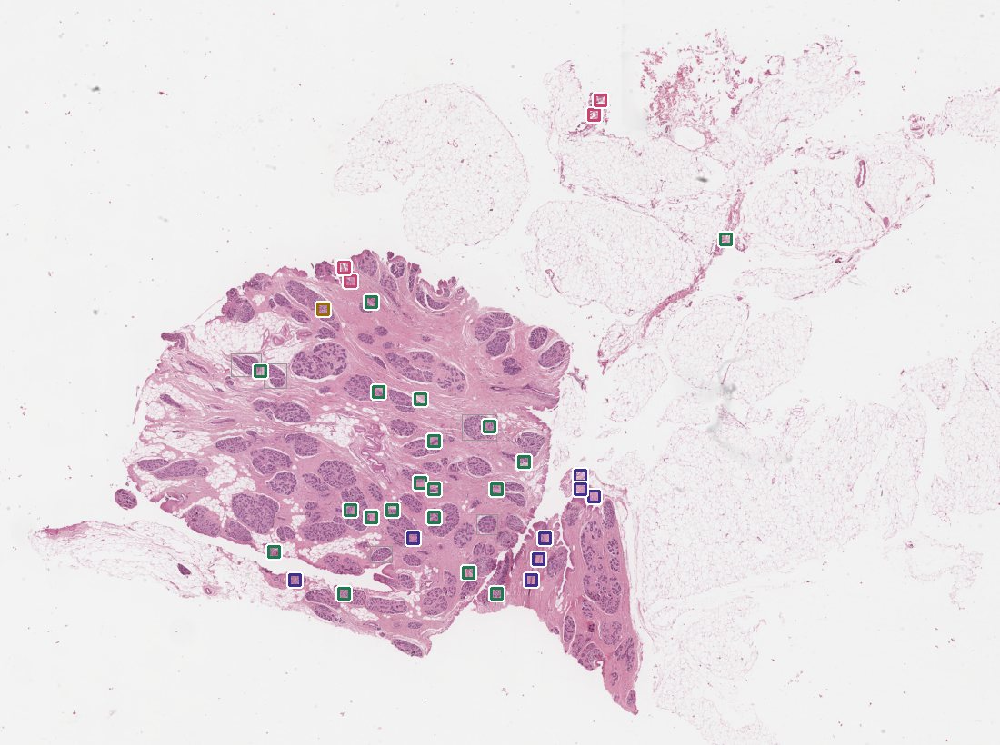
Em vez de só os 32 patches mais suspeitos, um pacote com número fixo de cada classe: 8 benignos, 6 atípicos, 6 DCIS e 6 carcinoma invasivo, os de maior confiança em cada uma. Três versões da evidência são comparadas nas 61 lâminas de validação, com o modelo de linguagem decidindo:
BRACS_748 · 15.138 candidatos → 32 escolhidos pontuação = sim(frase suspeita) − sim(frase benigna) distância mínima entre patches: 192 µm patches escolhidos com tumor (≥ 20 núcleos): roteador por frases 0,97 sorteio 0,24
Transforma cada patch escolhido em texto. É o estágio com mais testes, porque é onde a separação entre benigno, atípico, DCIS e carcinoma invasivo acontece.
Primeiro a categoria (benigno, atípico, maligno); se maligno, DCIS ou carcinoma invasivo. Uma tabela fixa transforma o resultado em texto:
[94720,22016] (maligno 1.00) invasive carcinoma 0.98
passou: 55,8% contra 42,3% das frasesO mesmo embedding do QuiltNet que fica no acaso com frases chega a 0,83–0,95 com uma camada treinada: a informação estava na imagem; o que falhava era a comparação com texto.
Só o UNI2-h mantém o desempenho fora da instituição de origem. O QuiltNet parecia bom no BRACS, mas aprendeu algo específico daquelas lâminas.
| Método | Benigno | Atípico | DCIS | IC | Média |
|---|---|---|---|---|---|
| Hierarquia com frases | 57% | 46% | 16% | 50% | 42,3% |
| Hierarquia com UNI2-h | 58% | 14% | 78% | 74% | 55,8% |
O ganho vem dos malignos. O atípico é o ponto fraco: há pouco dado de treino (972 patches, quase todos de 3 lâminas).
A mesma hierarquia, agora treinada com as regiões de treino do BRACS (23.669 patches de 3.402 regiões, até 16 por região) em vez dos patches de 18 lâminas. O atípico ganha muito mais exemplos: FEA 624 e ADH 387 regiões.
| Acerto por patch, nas 312 regiões de validação (rótulo oficial) | Benigno | Atípico | Maligno |
|---|---|---|---|
| Descritor das regiões | 84% | 35% | 90% |
| Com negativos benignos | 88% | 37% | 87% |
Agrupamento antigo (UDH em atípico): no teste externo, o atípico passou de 1 para 10 de 24 lâminas; com o rótulo oficial, a mesma regra acerta 5 de 17, porque parte do ganho vinha das lâminas UDH. O custo: o descritor marca patches como DCIS ou carcinoma invasivo também em lâminas benignas (por exemplo, 115 de 2.000 patches "invasivos" numa lâmina benigna da validação).
| CellViT original | Treinado no NuCLS | |
|---|---|---|
| Núcleos encontrados | 82–93% | |
| Tumor: sensibilidade / valor preditivo | 0,46 / 0,86 | 0,83 / 0,88 |
| Estroma: sensibilidade / valor preditivo | 0,80 / 0,44 | 0,72 / 0,52 |
| Medida vs. anotação (Spearman) | 0,28 | 0,35 |
Medidas mais robustas (distância mediana ao estroma; contato com 3 vizinhos) também ficaram entre 0,27 e 0,37. Decisão: os núcleos servem como sinal, mas o número não vai para o texto do laudo.
| Trocar frases uma a uma | não se repetiu em lâminas novas |
| Ensemble de frases | DCIS × IC 0,54–0,57 |
| Média com os 8 patches vizinhos | +3 pontos, só no IC |
| Tipo de tecido em volta do patch | relação invertida |
| "Tumor cercado de tumor → IC" | passou, efeito fraco (~55%) |
| UNI2-h + núcleos juntos | não acrescenta |
| Contornos oficiais das anotações | a maioria é retângulo |
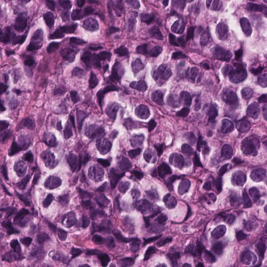
(maligno 1.00) ductal carcinoma in situ 0.99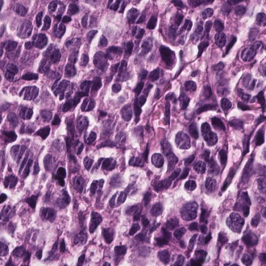
(maligno 1.00) invasive carcinoma 0.98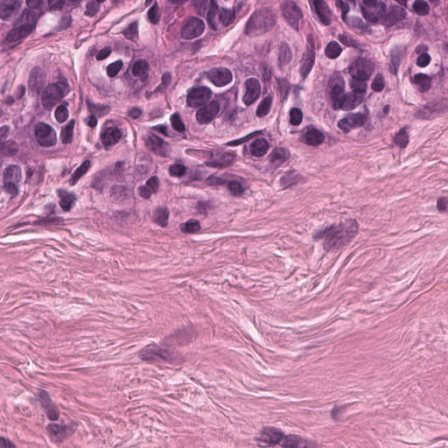
(benigno 1.00) benign tissue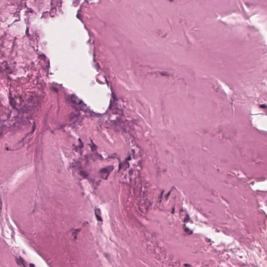
(maligno 1.00) invasive carcinoma 1.00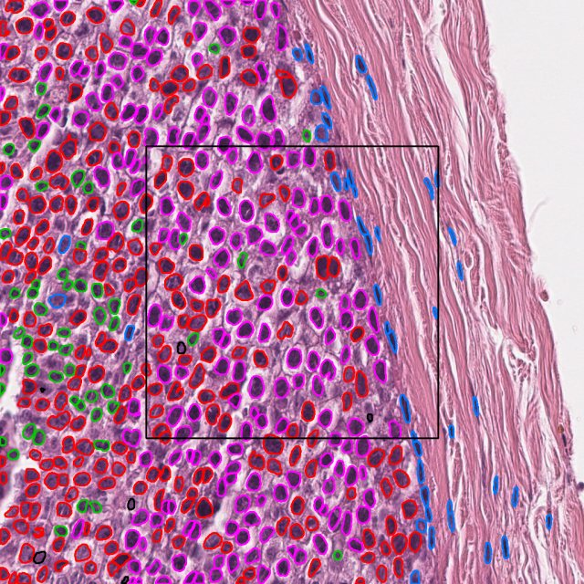
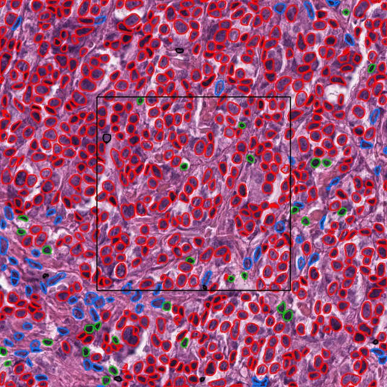
BRACS_748 · 32 patches descritos [96256,41984] (maligno 1.00) ductal carcinoma in situ 0.99 [94720,22016] (maligno 1.00) invasive carcinoma 0.98 [71680,61952] (maligno 1.00) ductal carcinoma in situ 1.00 [102400,42496] (maligno 1.00) invasive carcinoma 0.85 [98304,37888] (maligno 1.00) invasive carcinoma 1.00 … categorias: maligno 32 · DCIS 26 · carcinoma invasivo 6
Etapa nova. Em vez de o modelo de linguagem decidir a classe a partir de 32 patches, um classificador usa até 2.000 patches de cada lâmina: 12 números (frações por classe, médias e percentis altos das probabilidades) entram numa regressão logística treinada com o rótulo de 79 lâminas. O modelo de linguagem passa a só redigir.
Em vez de passar pelo descritor de cada patch, um modelo de MIL com atenção (Ilse et al., 2018) recebe os embeddings do UNI2-h dos 2.000 patches e aprende a classe com o rótulo de 79 lâminas. A atenção indica quais patches pesaram na decisão.
| Nas 57 lâminas | Benigno | Atípico | DCIS | IC | Total | Acurácia balanceada |
|---|---|---|---|---|---|---|
| Classificador + negativos | 10/20 | 6/17 | 2/8 | 11/12 | 29/57 | 0,505 |
| MIL com atenção | 15/20 | 10/17 | 2/8 | 11/12 | 38/57 | 0,626 |
| Descritor | MIL | |
|---|---|---|
| AUC benigno × atípico (37 lâminas) | 0,58 | 0,78 |
| AUC maligno × resto | 0,83 | 0,88 |
| Acurácia balanceada em 3 classes | 0,52 | 0,68 |
| Resposta em conjunto: acerto / exatas | 0,70 / 0,44 | 0,83 / 0,70 |
Confirmação sem usar as 57: em validação cruzada por paciente nas 79 lâminas de treino, o mesmo MIL acerta 57/79 (acurácia balanceada 0,68; benigno × atípico AUC 0,92), contra 46/79 (0,51) do classificador com descritor.
Critérios fixados antes: acurácia balanceada > 0,505 e AUC benigno × atípico ≥ 0,70. Intervalo de 95%: 0,52–0,75. Nenhum paciente em comum entre treino e teste; nenhum limiar escolhido no teste. Em 3 classes, 0,68 fica perto do UNI + ABMIL publicado (0,687, com 395 lâminas de treino), comparação indicativa. O DCIS continua fraco.
passou nos dois critériosNas 29 lâminas do teste com lesão anotada pelos patologistas, os 5% de patches com maior atenção foram comparados com as anotações.
| Lâminas acima do acaso | Topo na lesão | Acaso | Razão | |
|---|---|---|---|---|
| Atenção do MIL | 21/29 | 11,5% | 2,3% | 5,0 |
| Descritor, P(não benigno) | 24/29 | 8,8% | 2,3% | 3,9 |
Critério: acima do acaso em ≥ 70% das lâminas e razão ≥ 2. As anotações cobrem só 2,3% dos patches e marcam regiões, não a lesão inteira; por isso as frações absolutas são baixas. A atenção serve de explicação: aponta onde o modelo viu a lesão.
passouA mesma receita de classificação da lâmina (UNI2-h congelado e MIL com atenção, com o mesmo código e a mesma configuração de treino), retreinada com lâminas de pulmão do TCGA. O MIL é treinado do zero; o modelo da mama não é reaproveitado. Tarefa: adenocarcinoma (LUAD) × carcinoma escamoso (LUSC). 100 pacientes de cada tipo, sorteados antes de baixar; treino e teste com pacientes diferentes. O patch continua com 128 µm de lado, com o tamanho em pixels ajustado pela resolução de cada lâmina (20x ou 40x).
| Teste (78 lâminas) | Resultado |
|---|---|
| AUC LUAD × LUSC | 0,981 (IC 95% 0,953–1,0) |
| Acurácia balanceada | 0,949 |
| Acerto por classe | LUAD 37/39 · LUSC 37/39 |
| Acerto nas lâminas de 20x | 8/8 |
Critério fixado antes de baixar: AUC ≥ 0,85 e acurácia balanceada ≥ 0,75. Treino com 119 lâminas; 3 das 200 ficaram de fora (2 sem resolução no arquivo, 1 com download incompleto). Separar dois carcinomas de morfologia diferente é mais fácil que benigno × atípico na mama: o resultado mostra que a receita de classificação não depende de nada específico da mama, não que o problema da mama esteja resolvido.
passouO resto da pipeline no pulmão. O descritor por patch (normal, adenocarcinoma, carcinoma escamoso) é treinado no LungHist700, um conjunto de imagens de microscópio com rótulo por imagem, e aplicado às regiões de maior atenção do MIL nas 78 lâminas de teste do TCGA. Os campos e o pré-laudo seguem a versão da mama, sem a regra do componente invasivo e sem as medidas de núcleo, e as instruções do modelo de linguagem pedem para apontar regiões cuja classe difere do tipo sugerido. Critérios fixados antes de rodar.
| Teste | Critério | Resultado |
|---|---|---|
| Descritor nos pacientes de teste do LungHist700 | acurácia balanceada ≥ 0,80 | 0,926 |
| Descritor nas 3 regiões de maior atenção (TCGA) | classe real em ≥ 80% das lâminas | 58/78 (adeno 21/39, escamoso 37/39) |
| Pré-laudo (78 textos) | tipo igual ao do MIL em ≥ 90%; nenhum número ou coordenada inventada | 78/78; 0 de 1.035 números; 0 de 436 coordenadas |
Nas lâminas de adenocarcinoma, 36 das 117 regiões de maior atenção são descritas como pulmão normal e 21 como escamoso. Hipóteses não verificadas: o padrão lepídico, que cresce sobre as paredes alveolares, e a diferença entre foto de microscópio (LungHist700) e lâmina escaneada (TCGA). Em 27 lâminas alguma região discorda do tipo sugerido, e só 3 textos apontam a discordância: a regra nas instruções não bastou. A escala do LungHist700 (µm/px) não é informada e foi estimada pelo tamanho dos núcleos de linfócito; a conferência 20x/40x deu 1,65, quando deveria ficar perto de 2.
descritor não passou no TCGA; pré-laudo passouA mesma receita numa tarefa de graduação. Biópsias de próstata do PANDA, com grau ISUP de 0 (benigno) a 5 e máscara de rótulos (Gleason 3, 4, 5 no Radboud; câncer × benigno no Karolinska). Sorteio fixado antes de baixar: treino com 600 biópsias do Radboud (100 por grau) e teste com 300 do Karolinska (50 por grau), em centros diferentes porque o PANDA não informa o paciente. MIL, descritor por patch (treinado nas máscaras do Radboud), conferência das regiões de maior atenção na máscara e pré-laudo, com critérios fixados antes de rodar.
| Teste (Karolinska) | Critério | Resultado |
|---|---|---|
| MIL: grau ISUP, 300 biópsias | kappa quadrático ≥ 0,60 | 0,237 (IC 95% 0,14–0,34) |
| MIL: benigno × câncer | AUC ≥ 0,85 | 0,940 (IC 95% 0,91–0,97) |
| Descritor por patch: benigno × câncer | AUC ≥ 0,85 | 0,775 |
| 3 regiões de maior atenção no câncer (máscara) | ≥ 2 de 3 em ≥ 80% das biópsias | 76% (acaso 43%) |
| Pré-laudo (60 textos) | grau igual ao do MIL em ≥ 90%; nenhum número ou coordenada inventada | 60/60; 0 de 628 números; 0 de 315 coordenadas |
O MIL separa câncer de benigno em outro centro, mas não gradua: prevê ISUP 3 em 209 das 300 biópsias, inclusive em 38 das 50 benignas e em 31 das 50 de ISUP 5. Pode ser a troca de centro (outra coloração e outro escâner) ou a falta de informação espacial (o MIL não sabe onde cada patch está, e o Gleason é a arquitetura das glândulas). Em 35 das 60 biópsias do pré-laudo alguma região discorda do grau sugerido, e só 1 texto aponta a discordância. No download, o Kaggle limitou as requisições e uma rodada incompleta (861 biópsias) foi descartada; o teste foi refeito com as 900, sem mudança na regra.
detecta câncer; não graduaO MIL com atenção trata a biópsia como um saco de patches, sem saber quem é vizinho de quem, e o Gleason é a arquitetura das glândulas. No GAT-MIL, cada patch é ligado aos 8 vizinhos encostados e, antes da decisão, mistura o próprio embedding com o deles, com um peso aprendido por vizinho. Mesmo treino do MIL, sem ajuste. Comparação pareada com o MIL atual em dois cenários, com critério fixado antes: o GAT-MIL ganha em kappa, com o limite inferior do IC 95% da diferença acima de zero.
| Cenário | MIL atual | GAT-MIL | Diferença (IC 95%) |
|---|---|---|---|
| Treino no Radboud, teste no Karolinska (300) | 0,237 | 0,436 | +0,199 (0,114–0,289) |
| Dentro do Radboud, validação cruzada (600) | 0,784 | 0,806 | +0,021 (0,002–0,042) |
Kappa quadrático do grau ISUP. Entre centros, as biópsias previstas como ISUP 3 caem de 209 para 129 de 300, e o benigno × câncer sobe de AUC 0,940 para 0,963. A vizinhança ajuda nos dois cenários, mas o problema maior é a troca de centro: dentro do Radboud os dois modelos graduam bem, no Karolinska não. Dentro do Radboud, a mesma pessoa pode ter biópsias no treino e no teste (o PANDA não informa o paciente), o que favorece os dois modelos igualmente. Próximo passo: a mesma comparação no BRACS e no TCGA.
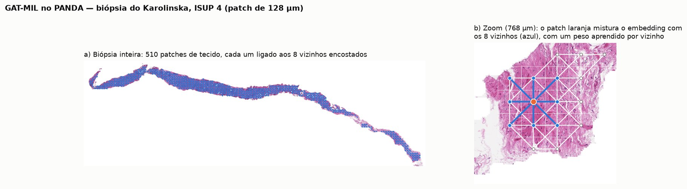
A mesma comparação, com critério fixado antes. No BRACS e no TCGA a amostra de 2.000 patches cobre só parte do tecido, e quase nenhum patch tem vizinho encostado; o grafo liga cada patch aos até 8 patches da amostra mais próximos, a até 384 µm.
| Cenário | MIL atual | GAT-MIL | Diferença (IC 95%) |
|---|---|---|---|
| Mama (BRACS), 57 lâminas, acurácia balanceada | 0,626 | 0,597 | −0,029 (−0,077 a 0,0) |
| Mama, validação cruzada por paciente (79) | 0,680 | 0,636 | −0,045 (−0,123 a 0,030) |
| Pulmão (TCGA), 78 lâminas, AUC | 0,981 | 0,981 | 0,000 (−0,010 a 0,011) |
Na mama o critério era o GAT-MIL ganhar, e não ganhou; no pulmão, já no teto, o critério era não piorar. A vizinhança ajudou só na graduação da próstata, onde o grafo cobre o tecido inteiro. Possíveis razões, não testadas: grafo parcial; o rótulo do BRACS é o da lesão mais grave, muitas vezes pequena; só 79 lâminas de treino.
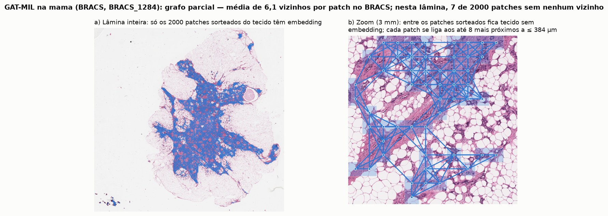
Terceiro órgão: carcinoma renal de células claras, papilífero e cromófobo (TCGA), mesma receita do pulmão. No TCGA, cada hospital mandou casos de um subtipo só; um modelo pode acertar aprendendo o "jeito" do hospital (coloração, escâner, preparo) em vez da morfologia. Por isso o teste principal usa só hospitais que não aparecem no treino. Critério fixado antes: MIL com acurácia balanceada ≥ 0,80 e AUC ≥ 0,90; GAT-MIL não pior.
| Divisão | MIL: acurácia balanceada | MIL: AUC | GAT-MIL: acurácia balanceada |
|---|---|---|---|
| Hospitais novos no teste (137 lâminas) | 0,953 (0,915–0,983) | 0,987 | 0,945 |
| Sorteio aleatório (119 lâminas) | 0,983 | 1,000 | 0,975 |
Nos hospitais novos: células claras 49/54, papilífero 39/41, cromófobo 42/42. A queda do sorteio aleatório para os hospitais novos (0,98 → 0,95) mostra que parte do acerto no sorteio vinha de reconhecer o hospital, mas pouca. A padronização por hospital não se aplica aqui: com um subtipo por hospital, subtrair a média do hospital apagaria o próprio subtipo. Referência indicativa: o CLAM reporta AUC ~0,99 nos mesmos três subtipos, com divisão aleatória.
passou nos dois critériosDataset do orientador (não público): 52 pacientes, adenocarcinoma × carcinoma epidermoide, com campos de biópsia e uma pasta de "citologia". Antes do teste, uma verificação mostrou que essa pasta tem núcleos recortados dos próprios campos de biópsia (cada recorte aparece pixel a pixel no seu campo). Então dá pra comparar o mesmo núcleo sozinho, sobre fundo branco, e com o tecido em volta. Avaliação por paciente (validação cruzada em 5 partes, repetida 5 vezes). Critérios fixados antes: biópsia com acurácia balanceada ≥ 0,80; núcleo isolado acima do acaso; contexto melhor que o núcleo isolado; UNI2-h melhor que medidas clássicas no núcleo.
| O que o modelo vê | AUC | Acurácia balanceada |
|---|---|---|
| Núcleo isolado, medidas clássicas (forma, cor, textura) | 0,599 | 0,518 |
| Núcleo isolado, UNI2-h + MIL | 0,479 | 0,532 |
| Mesmo núcleo com o tecido em volta, UNI2-h + MIL | 0,948 (0,879–0,996) | 0,866 |
| Campo de biópsia inteiro, UNI2-h + MIL | 0,942 | 0,886 |
O núcleo sozinho fica no acaso, com o UNI2-h e com medidas clássicas. Com o tecido em volta, o mesmo núcleo chega ao nível do campo inteiro (diferença de AUC +0,47, IC 0,29 a 0,65). Neste conjunto, o subtipo está no arranjo do tecido, não no núcleo; super-resolução do núcleo não traria essa informação. Ressalvas: 52 pacientes, um só hospital, máscaras dos núcleos de uma segmentação antiga.
passou em 2 de 4 critériosDuas correções que não usam nenhum rótulo do centro novo, com critério fixado antes (com o GAT-MIL, ganho em kappa com o limite inferior do IC 95% acima de zero). Padronização por centro: cada dimensão do embedding é centrada e escalada com a média e o desvio dos patches do próprio centro. Normalização de cor (Reinhard): a cor de cada biópsia é levada à cor média do treino, e os embeddings são recalculados.
| Treino no Radboud, teste no Karolinska (300) | MIL atual | GAT-MIL | Diferença no GAT-MIL (IC 95%) |
|---|---|---|---|
| Embeddings originais | 0,237 | 0,439 | — |
| Padronização por centro | 0,540 | 0,609 | +0,170 (0,067–0,269) |
| Normalização de cor | 0,275 | 0,225 | −0,214 (−0,317 a −0,102) |
Kappa quadrático do grau ISUP. Com a padronização por centro, o colapso em ISUP 3 some (previstos como ISUP 3: 142 → 38 de 300) e os ganhos do GAT-MIL e da padronização se somam; o custo é precisar de um lote de lâminas do centro novo, sem rótulo, antes de usar. A normalização de cor piorou: só 1 das 50 benignas certa. A diferença entre centros que atrapalha o modelo não é só a cor média. Ainda longe do dentro do centro (~0,80).
padronização por centro: passou normalização de cor: não passouIdeia proposta em 14/11/2026. Em vez de olhar todos os patches, o modelo olha primeiro a biópsia inteira e escolhe até 16 pontos de interesse (os de maior atenção de um MIL que não viu a biópsia, com centros a pelo menos 1 mm). Em cada ponto monta um grafo local denso, numa janela de 7 × 7 patches; depois liga os pontos numa rede em que a atenção entre eles diminui com a distância. Mesmo treino, sem ajuste, embeddings originais. Critério fixado antes: a rede ganha do MIL atual em kappa, com o limite inferior do IC 95% da diferença acima de zero.
| Cenário | MIL atual | GAT-MIL | Rede de grafos | Rede − MIL (IC 95%) |
|---|---|---|---|---|
| Treino no Radboud, teste no Karolinska (300) | 0,237 | 0,420 | 0,442 | +0,205 (0,104–0,310) |
| Dentro do Radboud, validação cruzada (600) | 0,784 | 0,795 | 0,809 | +0,025 (−0,002 a 0,051) |
Kappa quadrático do grau ISUP. A rede usa em média 9,8 pontos por biópsia (as biópsias são finas, e poucas comportam 16 pontos a 1 mm), e as janelas cobrem 67% dos patches. Com isso fica no nível do GAT-MIL, que olha todos os patches (diferença +0,021 entre centros e +0,014 dentro do Radboud, as duas sem significância): escolher os pontos pela atenção não perde o que importa pro grau. Próximos passos: a rede com a padronização por centro, e a rede na mama, onde as lâminas são grandes e a amostra de patches é parcial.
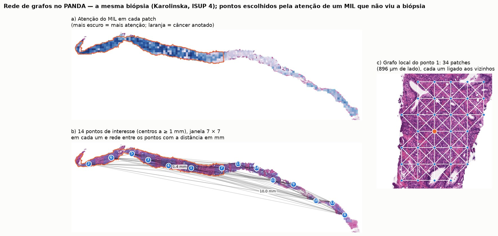
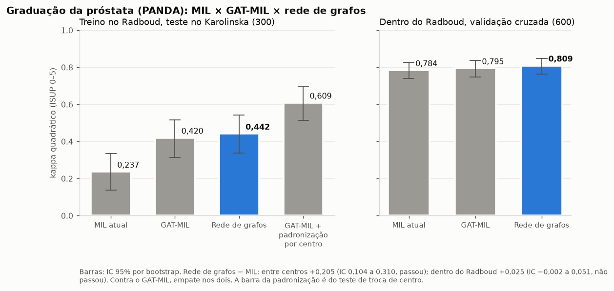
As mesmas quatro lâminas dos mapas do descritor. Esquerda: classe de cada patch pelo descritor. Direita: atenção do MIL, em percentil dentro da lâmina (escuro = pesou mais na decisão), com o contorno das lesões anotadas pelos patologistas em azul-esverdeado.
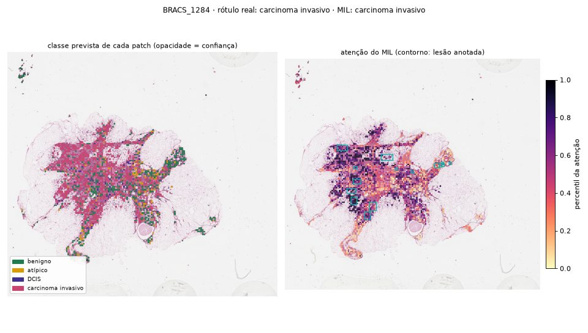
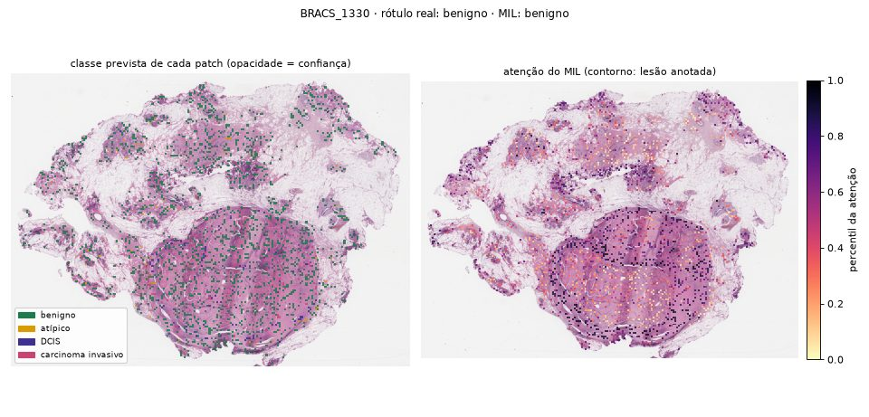
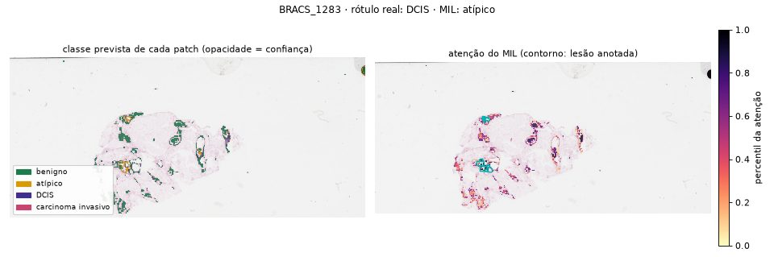
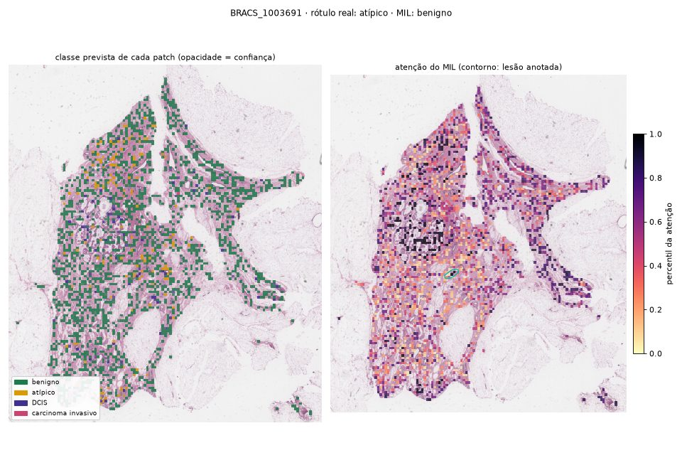
No pulmão (TCGA) não há anotação de região, então a atenção só era mostrada. Este teste não precisa de anotação: se a atenção é fiel ao modelo, tirar os patches de maior atenção deve derrubar a probabilidade da classe prevista mais do que tirar patches sorteados, e ficar só com eles deve sustentar a classe melhor do que ficar com sorteados. Mesmos modelos dos pré-laudos (classe prevista igual em 78/78 e 300/300). Critérios fixados antes: diferença > 0 com IC 95% acima de 0, tirando 10% (remoção) e ficando com 20 patches (suficiência).
| Pulmão (78) | Próstata (300) | |
|---|---|---|
| Remoção: queda tirando 10% de maior atenção − tirando 10% sorteados | +0,120 (0,052 a 0,195) | +0,203 (0,173 a 0,234) |
| Classe muda tirando 10%: atenção / sorteio | 14,1% / 0% | 39,3% / 3,3% |
| Suficiência: P(classe) só com os 20 de maior atenção − só com 20 sorteados | −0,091 (−0,171 a −0,011) | +0,188 (0,165 a 0,211) |
| Separando pela classe prevista (depois, sem critério): suficiência | escamoso +0,093; adenocarcinoma −0,276 | com câncer +0,196; ISUP 0 (8) −0,089 |
Tirar os patches de maior atenção derruba a decisão; tirar a mesma quantidade sorteada quase não muda nada. A suficiência falha no pulmão por causa das lâminas previstas como adenocarcinoma. Hipótese: o MIL decide como um detector da classe "positiva" (escamoso, câncer), e a outra classe é a ausência dessa evidência; nessas lâminas, os patches de maior atenção são os mais parecidos com escamoso, o que bate com o descritor ter chamado de normal ou escamoso as regiões de maior atenção em 18 de 39 lâminas de adenocarcinoma.
remoção: passou nos dois suficiência, próstata: passou suficiência, pulmão: não passouOs pré-laudos da próstata usam o GAT-MIL com embeddings padronizados por centro, e as regiões vêm da atenção dele. Mesma pergunta e mesmos critérios, com o grafo refeito só com os patches que ficam. Modelo retreinado com a mesma receita (classe igual à da rodada dos pré-laudos em 259 de 300; atenção com correlação 0,95).
| Próstata, 300 biópsias | ABMIL | GAT-MIL padronizado |
|---|---|---|
| Remoção: 10% de maior atenção − sorteados | +0,203 | +0,310 (0,268 a 0,356) |
| Classe muda tirando 10%: atenção / sorteio | 39% / 3% | 55% / 5% |
| Suficiência: só os 20 de maior atenção − 20 sorteados | +0,188 | +0,124 (0,086 a 0,160) |
| Previstas como ISUP 0 (35): remoção; suficiência | −0,263; −0,089 (8) | −0,207; −0,305 |
A atenção do GAT-MIL sustenta a decisão, e mais fortemente na remoção que a do ABMIL. A exceção é a mesma: nas biópsias previstas como benignas, os patches de maior atenção são os mais suspeitos de câncer, não a evidência de benignidade.
remoção e suficiência: passaram| Benigno | Atípico | DCIS | IC | Total | Critério | |
|---|---|---|---|---|---|---|
| Modelo de linguagem decide (E0) | 1/20 | 1/17 | 8/8 | 7/12 | 17/57 | referência |
| Regra de proporção (22/10) | 7/20 | 5/17 | 0/8 | 7/12 | 19/57 | não passou |
| Classificador | 7/20 | 3/17 | 3/8 | 11/12 | 24/57 | sem critério nesta versão |
| Classificador + negativos benignos | 10/20 | 6/17 | 2/8 | 11/12 | 29/57 | passou, por pouco |
| Hierárquico + negativos | 10/20 | 9/17 | 1/8 | 11/12 | 31/57 | sem critério |
Cada célula: lâminas certas / lâminas daquela classe (20 + 17 + 8 + 12 = 57). Linhas do modelo de linguagem e da regra de 22/10: as mesmas previsões, repontuadas com o rótulo oficial. Classificadores: refeitos com o rótulo oficial em 07/11. Intervalo de 95% do classificador com negativos: 0,40–0,63. O critério comparava com a versão de 06/11 repontuada (0,491).
O rótulo de uma lâmina do BRACS é o da lesão mais grave: numa lâmina benigna, nenhum patch é atípico nem maligno. Até 500 patches de cada uma das 34 lâminas benignas do treino (N, PB, UDH) entram no descritor como "benigno", sem usar os do mesmo paciente ao descrever uma lâmina.
Fração média de patches classificados como DCIS ou IC nas 20 lâminas benignas do teste. Por patch, nas regiões de validação: benigno 84% → 88%, maligno 90% → 87%.
passou| AUC | Limiar 0,5 | Sens. ≥ 0,90 no treino | |
|---|---|---|---|
| Maligno × resto | 0,83 | sens. 13/20, espec. 30/37 | sens. 20/20, espec. 0/37 |
| Suspeito (FEA, ADH, DCIS, IC) × benigno | 0,66 | sens. 26/37, espec. 10/20 | sens. 35/37, espec. 5/20 |
Critério: sensibilidade ≥ 0,90 e especificidade ≥ 0,40, com o limiar escolhido no treino. O maligno se separa bem do resto, mas o limiar do treino não transfere para o teste; dizer sempre "não maligno" já acerta 37/57. Lesões atípicas ocupam pouca área, e os números da lâmina inteira as diluem.
não passouQuando a maior probabilidade fica abaixo de um limiar escolhido no treino, a lâmina vai direto ao patologista.
| Lâminas | Acurácia balanceada | |
|---|---|---|
| Todas | 57 | 0,424 |
| Com decisão | 32 (56%) | 0,478 |
A curva de acerto por cobertura oscila entre 0,41 e 0,50, sem subir de forma regular: 57 lâminas são poucas para concluir.
passou, ganho pequenoComparação indicativa, não direta: o artigo do UNI testa nas 87 lâminas oficiais; aqui são 57 delas. Referência: Chen et al., Nature Medicine, 2024, Extended Data Table 19.
Hipótese vinda dos mapas de calor abaixo: numa lesão, os patches suspeitos formam um foco; numa lâmina benigna, os falsos positivos ficam espalhados. Quatro números a mais por lâmina, com os 8 vizinhos mais próximos de cada patch: o agrupamento dos suspeitos, dos malignos e dos atípicos, e a fração de suspeitos em foco.
| Benigno × atípico (37 lâminas) | AUC |
|---|---|
| 12 atributos | 0,58 |
| 12 + 4 espaciais | 0,61 |
Critério: ganho de pelo menos 0,05 e AUC de pelo menos 0,70. A hipótese não se sustentou: nas lâminas benignas, os suspeitos também ficam agrupados, cerca de 4 vezes acima do acaso, quase como nas atípicas (4,5). Os falsos positivos vêm em regiões inteiras que o descritor confunde, e os dois mapas que sugeriram a ideia não representavam o conjunto.
não passouQuando o classificador não separa benigno de atípico, responde "benigno ou atípico" em vez de chutar. Medem-se juntos o acerto do conjunto (a classe real está na resposta?) e as respostas exatas (uma classe só), para o recuo não virar resposta vaga sempre.
| Nas 57 lâminas | Acerto do conjunto | Respostas exatas |
|---|---|---|
| Sem recuo (3 classes) | 0,53 | 1,00 |
| Com recuo | 0,70 | 0,44 |
Critério: acerto do conjunto ≥ 0,75 e respostas exatas ≥ 0,50. A margem de recuo, escolhida no treino, ficou no máximo, e a resposta virou quase "maligno × não maligno": 26 das 37 benignas e atípicas recebem "benigno ou atípico"; 6 de 20 malignas também.
não passouPrimeira lâmina de cada classe real do teste, sem escolha por acerto. Esquerda: classe prevista de cada patch. Direita: probabilidade de não ser benigno. Só 2.000 patches de cada lâmina foram classificados, por isso o aspecto pontilhado. Descritor das regiões, sem os negativos, e classificador da lâmina de 06/11 (agrupamento antigo); os rótulos reais das quatro lâminas não mudam com a correção.
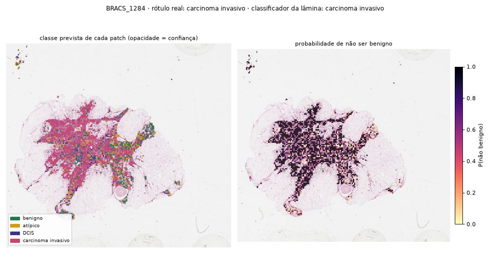
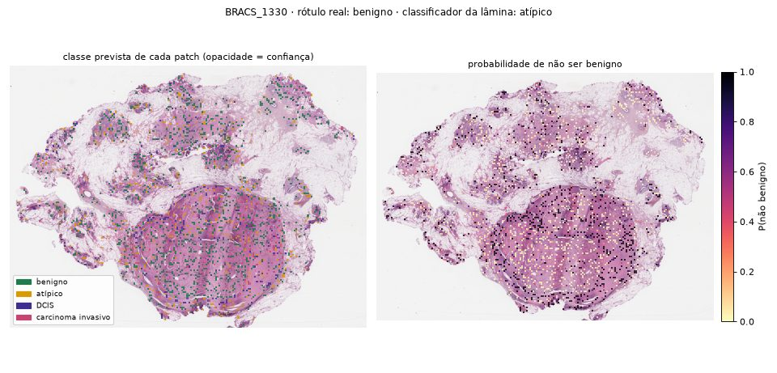
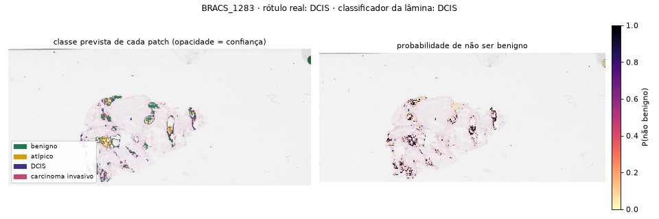
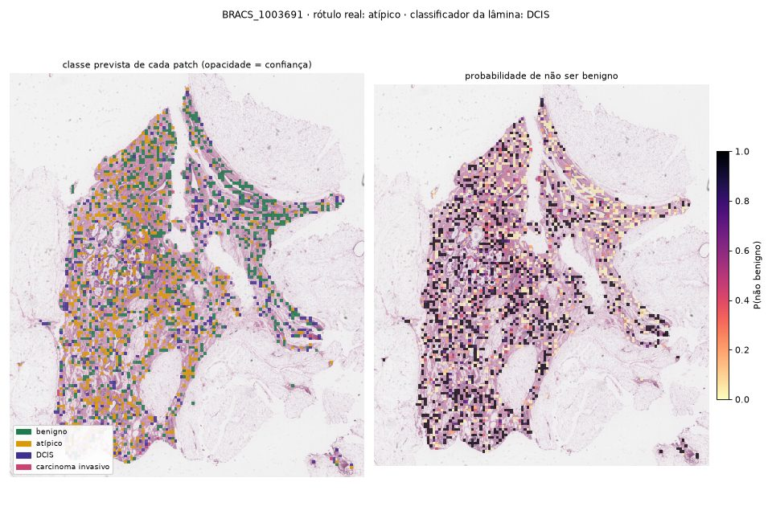
Classe sugerida pelo classificador: benigno Probabilidades: benigno 0.40, atípico 0.33, DCIS 0.15, carcinoma invasivo 0.12 Confiança: baixa Proporção entre os 2000 patches: benigno 73.3% · atípico 13.9% DCIS 8.0% · carcinoma invasivo 4.8% Regiões a conferir: [3584,59904] ductal carcinoma in situ 1.00 [4096,62464] invasive carcinoma 1.00 [43008,56832] atypical epithelial lesion
Junta os 32 textos num único prompt, com as contagens por categoria e as imagens de 3 patches âncora.
Patches analisados: 32 Patches por categoria: benigno 0, atipico 0, maligno 32 - ductal carcinoma in situ: 26/32 (81%) - invasive carcinoma: 6/32 (19%) Componente invasivo: PRESENTE (3 patches, P ≥ 0,90)
Na prática, um componente invasivo define o diagnóstico mesmo sendo minoria dos patches. Sem essa regra, o modelo de linguagem seguia a maioria. Com ela, o prompt diz se há componente invasivo (pelo menos 2 patches de carcinoma invasivo com probabilidade ≥ 0,90) e lembra que ele define o diagnóstico.
Patches analisados: 32 Patches por categoria: benigno 30, atipico 2, maligno 0 - benign tissue: 30/32 patches (94%) - atypical epithelial lesion: 2/32 patches (6%) Componente invasivo: não detectado (critério: ≥ 2 patches com invasive carcinoma e probabilidade ≥ 0.90; encontrados 0).
Um modelo de linguagem local (Gemma 3 4B, via Ollama) lê o prompt e as imagens e escreve o rascunho, com impressão diagnóstica, grau de confiança, regiões para revisão e limitações. O rótulo real nunca vai para o modelo.
| Benigno | Atípico | DCIS | IC | Total | |
|---|---|---|---|---|---|
| Sem a regra | 1/6 | 0/4 | 1/1 | 3/4 | 5/15 |
| Com a regra | 4/6 | 0/4 | 1/1 | 4/4 | 9/15 |
Cada célula: lâminas certas / lâminas daquela classe, com o rótulo oficial. O total é a soma das colunas.
passou: IC 3 → 4 de 4; benignas 1 → 4 de 6| Benigno | Atípico | DCIS | IC | Total | |
|---|---|---|---|---|---|
| Sem a regra | 1/20 | 1/17 | 7/8 | 5/12 | 14/57 |
| Com a regra | 1/20 | 1/17 | 8/8 | 7/12 | 17/57 |
| Respostas malignas | 55/57 | ||||
Cada célula: lâminas certas / lâminas daquela classe, com o rótulo oficial (20 + 17 + 8 + 12 = 57). Com a regra: 1 + 1 + 8 + 7 = 17 certas.
A regra ajuda no carcinoma invasivo (5 → 7 de 12), mas a pipeline chama de maligno 55 das 57 lâminas. O ganho nas benignas visto no desenvolvimento não se repetiu. O problema vem antes do modelo de linguagem: o roteador busca o que parece suspeito e o descritor quase nunca diz "atípico".
A classe passa a vir do classificador da lâmina, e o modelo recebe campos fixos: classe, probabilidades, confiança, proporções e regiões. Uma checagem automática confere o texto: a classe é a sugerida? Os números e as coordenadas citados existem na evidência? A comparação é com os 57 pré-laudos antigos.
| Só redige (novo) | Modelo decide (antigo) | |
|---|---|---|
| Classe do texto igual à sugerida | 57/57 | — |
| Números sem sustentação | 0 de 791 | 11 de 523 (2,1%) |
| Coordenadas inventadas | 0 de 175 | 2 de 178 |
57 lâminas do teste. A checagem não detecta achados morfológicos inventados; na leitura de 3 textos, não houve nenhum. O texto quase só reorganiza os campos. A classe veio do classificador de 06/11 (agrupamento antigo).
passouA classe e a confiança vêm do MIL; as regiões citadas são os 3 patches de maior atenção, os que mais pesaram na decisão, cada um com a descrição do descritor. O modelo de linguagem só redige.
| 57 pré-laudos | Com o MIL | Modelo decide (antigo) |
|---|---|---|
| Classe do texto igual à sugerida | 57/57 | — |
| Números sem sustentação | 0 de 791 | 11 de 523 |
| Coordenadas inventadas | 0 de 267 | 2 de 178 |
| Classe final certa | 38/57 | 17/57 |
| Regiões citadas dentro da lesão anotada | 18 de 93 | 7 de 93 (descritor) |
Passou no critério fixado antes (classe igual em ≥ 90% e números sem sustentação não maiores que nos antigos). Regiões dentro da lesão: lâminas atípicas, DCIS e IC com anotação; as anotações cobrem só ~2% dos patches.
passouProblema que a checagem automática não pega: em 15 lâminas, o MIL sugere benigno, mas regiões de maior atenção são descritas pelo descritor como atípicas ou malignas. Só 1 dos 15 textos aponta a contradição; os outros a justificam. Exemplo (BRACS_1003691, atípica):
Benigno [...] A presença de um patch de ductal carcinoma in situ (1.00) com alta probabilidade (0.99) influenciou a sugestão de benignidade.
Os números estão todos certos, mas o raciocínio não: um patch de DCIS não sustenta benignidade. Isso reforça a leitura dos textos por patologista e pede uma regra nos campos que sinalize a contradição.
Quando uma região de maior atenção contradiz a classe sugerida, o texto quase nunca dizia isso, mesmo com a regra nas instruções (pulmão 3 de 27, próstata 1 de 35). Aqui a discordância é calculada por código e entra nos campos como uma linha pronta ("AVISO: a região [x,y] foi descrita como … o que discorda do tipo sugerido …"); o modelo só precisa reproduzi-la numa seção própria. Mesmos documentos, campos e modelo dos testes anteriores. Critérios fixados antes: aponta em ≥ 90% dos documentos com região discordante; falso alarme ≤ 10% nos documentos sem discordância; classe, números e coordenadas continuam fiéis.
| Pulmão antes | Pulmão com aviso | Próstata antes | Próstata com aviso | |
|---|---|---|---|---|
| Documentos com região discordante que apontam | 5/27 | 27/27 | 11/35 | 35/35 |
| Regiões discordantes apontadas | 12/64 | 64/64 | 23/75 | 75/75 |
| Falso alarme sem discordância | 3/51 | 0/51 | 8/25 | 0/25 |
| Classe igual; números e coordenadas inventados | 78/78; 0 | 78/78; 0 | 60/60; 0 | 60/60; 0 |
| Aviso em região que não discorda (contado depois) | — | 1 doc. | — | 9 docs. |
| Classe da região trocada (contado depois) | 1 doc. | 0 | 0 | 3 docs. |
Com o aviso pronto, o texto aponta todas as regiões discordantes nos dois órgãos e não avisa sem motivo nos documentos sem discordância. Lendo os textos depois, apareceu o que o critério de falso alarme não mede: dentro de documentos que têm aviso, o modelo às vezes copia o formato para regiões que não discordam (na próstata, 9 de 60, a maioria Gleason 3 ou 4 em biópsias com ISUP ≥ 1) e, em 3 deles, troca a classe da região. O modelo reproduz bem, mas não deve decidir o que é discordante: o próximo passo é inserir a seção de avisos por código e conferir o par coordenada–classe na checagem.
passou nos 3 critérios, nos dois órgãosO modelo continua redigindo o pré-laudo, mas o conteúdo da seção de avisos é substituído por código pelas linhas calculadas, e a checagem passa a conferir o par coordenada–classe de cada região citada. A mesma configuração foi rodada em inglês (campos traduzidos por código, instruções em inglês). Mesmos documentos e modelo. Critérios fixados antes: 0 trocas de classe, 0 avisos em região que não discorda, todas as regiões discordantes na seção, 0 números e coordenadas inventados; em inglês, também a classe igual em ≥ 90%.
| Pulmão PT | Pulmão EN | Próstata PT | Próstata EN | |
|---|---|---|---|---|
| Classe igual à sugerida | 78/78 | 78/78 | 60/60 | 60/60 |
| Regiões discordantes na seção | 64/64 | 64/64 | 75/75 | 75/75 |
| Docs. com aviso em região que não discorda (texto do modelo → colado) | 1 → 0 | 4 → 0 | 9 → 0 | 10 → 0 |
| Docs. com classe da região trocada (texto do modelo → colado) | 0 → 0 | 0 → 0 | 3 → 0 | 3 → 0 |
| Números não sustentados | 0/891 | 0/574 | 0/408 | 0/388 |
| Coordenadas inventadas | 0/274 | 1/284 | 0/200 | 0/276 |
Os avisos espúrios e as trocas de classe estavam todos no que o modelo escrevia na seção de avisos e somem com a colagem, nos dois idiomas. A única falha foi em inglês, no pulmão: num documento, o modelo copiou uma coordenada errada na lista de regiões para revisão ([22815,28392] virou [22815,28913]); a checagem acusa, mas o critério pedia zero. Essa lista também pode ser montada por código. Na próstata, os campos ainda vêm do ABMIL sem padronização por centro (quase tudo ISUP 3).
português: passou nos dois órgãos inglês, próstata: passou inglês, pulmão: não passou (1 coordenada)O aviso de discordância é calculado por código a partir das 3 regiões de maior atenção, então dá para medi-lo em todas as lâminas de teste: o MIL erra mais quando há aviso? Pulmão: 78 lâminas, ABMIL. Próstata: 300 biópsias, GAT-MIL com embeddings padronizados por centro (o melhor modelo na troca de centro), erro = câncer trocado por benigno ou o contrário. Critério fixado antes: taxa de erro maior com aviso, Fisher unilateral p < 0,05.
| Pulmão (78; 4 erros) | Próstata (300; 35 erros) | |
|---|---|---|
| Erro com aviso / sem aviso | 4/27 / 0/51 | 16% / 6% (27/169, 8/131) |
| Erros que têm aviso | 4 de 4 | 27 de 35 |
| Fisher unilateral; risco relativo | p = 0,012; — | p = 0,006; 2,6 (1,3 a 7,5) |
| Erros pegos pela confiança não alta | 1 de 4 | 28 de 35 |
| Erros pegos por aviso ou confiança não alta | 4 de 4 | 34 de 35 |
No pulmão, 3 dos 4 erros têm confiança alta e só o aviso os marca; com 4 erros, o resultado é frágil. Na próstata o aviso é frequente (169 de 300) e soma com a confiança. Na mesma rodada, a lista "Regiões para revisão prioritária" também passou a ser colada por código: no pulmão, 0 coordenadas inventadas em português (0 de 439) e em inglês (0 de 331), e o critério passou nos dois idiomas. O GAT-MIL padronizado, retreinado guardando a atenção (kappa 0,57; antes 0,61, o treino na GPU não é determinístico), não colapsa em ISUP 3, e a atenção dele cai no câncer em 227 de 250 biópsias (ABMIL: 190). Os pré-laudos da próstata com ele, avisos e regiões colados, passam no critério: classe igual em 60/60 (português) e 56/60 (inglês; nos 4 restantes a impressão escrita está certa e quem errou foi a extração da classe; lendo a classe por código na impressão, 60/60), 0 avisos espúrios, 0 trocas de classe e 0 coordenadas inventadas (0 de 262 e 0 de 247). Antes da colagem, o modelo criou avisos em regiões que não discordam em 7 e 14 documentos.
aviso × erro: passou nos dois órgãos regiões coladas, pulmão: passou em português e inglês próstata com GAT-MIL: passou nos dois idiomasA mesma configuração final (campos, instruções, avisos e regiões colados por código), trocando só o modelo que redige, para saber se a fidelidade vem da colagem ou do Gemma. Critério fixado antes, em cada órgão e idioma: classe igual em ≥ 90% e as mesmas condições de antes.
| Llama 3.2 3B | Pulmão PT | Pulmão EN | Próstata PT | Próstata EN |
|---|---|---|---|---|
| Classe extraída = sugerida | 57/78 | 78/78 | 60/60 | 60/60 |
| Regiões discordantes na seção de avisos | 64/64 | 64/64 | 55/55 | 55/55 |
| Aviso espúrio; classe trocada (documentos) | 1; 0 | 0; 0 | 0; 0 | 0; 0 |
| Números sem sustentação; coordenadas inventadas | 0; 0 | 0; 0 | 0; 0 | 1; 0 |
Os avisos, a classe das regiões e as coordenadas ficam certos com o Llama também. As duas falhas vêm de outro lugar: em português o Llama escreve os títulos de seção com ### ou em negrito, e tanto a colagem quanto a leitura da classe procuram o título exato; lendo a impressão, a classe está certa nos 276 laudos. Em inglês na próstata, ele escreveu um número calculado (69% = 100% − 31%), que a checagem pegou. Lição: as seções críticas devem ser montadas pelo código, não localizadas no texto do modelo.
pulmão EN e próstata PT: passou pulmão PT e próstata EN: não passou## Impressão diagnóstica sugerida Moderada. A alta prevalência de DCIS (84%) sugere uma avaliação mais aprofundada para determinar o grau e a extensão da doença. A presença de patches com categorias de "atípico" e "invasivo carcinoma" requer investigação adicional. ## Regiões para revisão prioritária [99840,17408] – Patch com alta probabilidade de DCIS (1.00). [117248,24064] – Patch com alta probabilidade de DCIS (1.00). Classificação extraída: DCIS
## Impressão diagnóstica sugerida Baixo (devido à predominância de tecido benigno e à baixa probabilidade da lesão atípica). A evidência atual não suporta a presença de carcinoma invasivo. ## Regiões para revisão prioritária [59392,52736] - Probabilidade de 0.97 para lesão epitelial atípica, necessita de avaliação mais detalhada. Classificação extraída: benigno
## Impressão diagnóstica sugerida Baixo (6% de patches atípicos) – A predominância de tecido benigno sugere uma avaliação de lesão benigna. A presença de duas lesões atípicas requer investigação adicional. Classificação extraída: DCIS ← não bate com o texto
| Estágio | Situação | Próximo passo |
|---|---|---|
| 1. Filtro de tecido | resolvido | — |
| 2. Roteador | bom em lâminas malignas | métrica para lâminas benignas e atípicas |
| 3. Descritor | bom no DCIS × IC; negativos cortam falsos malignos; atípico ainda fraco | recuperar o DCIS sem perder as benignas |
| 3½. Decisão da lâmina | MIL com 79 lâminas: 38/57, acurácia balanceada 0,63; benigno × atípico AUC 0,78; no pulmão (TCGA), AUC 0,98; no rim (TCGA, hospitais novos), acurácia balanceada 0,95; na próstata (PANDA), detecta câncer (AUC 0,94) mas gradua mal (kappa 0,24; com o GAT-MIL, 0,44; com o GAT-MIL e a padronização por centro, 0,61; com a rede de grafos, 0,44; na mama o GAT-MIL não ajudou) | MIL com as 379 lâminas de treino; confirmar nas 30 lâminas de teste não usadas; na próstata, adotar GAT-MIL + padronização por centro como padrão; rede de grafos com padronização por centro e na mama |
| 4. Agregação | regra ajuda no IC | trocar a contagem dos 32 patches pelos campos fixos |
| 5. Síntese | só redige, com a classe do MIL; números fiéis; com o aviso pronto nos campos, aponta as discordâncias em 27/27 (pulmão) e 35/35 (próstata), antes 5 e 11; com os avisos colados por código, 0 avisos falsos e 0 trocas de classe, em português e em inglês; com a lista de regiões também colada, 0 coordenadas inventadas no pulmão nos dois idiomas; o aviso marca os erros do MIL (pulmão 4 de 4 erros; próstata 16% × 6%) | avaliação por patologista; seções críticas montadas pelo código |
Ressalvas gerais: 2 lâminas por classe no desenvolvimento; as anotações do BRACS marcam regiões, não cada célula; o rótulo da lâmina é o da lesão mais grave; no PANDA não há identificação do paciente, então dentro do Radboud a mesma pessoa pode ter biópsias no treino e no teste.
Os resultados principais de cada etapa, por tipo de câncer: mama (BRACS; benigno, atípico, DCIS, carcinoma invasivo), pulmão (TCGA; adenocarcinoma × carcinoma escamoso), rim (TCGA; células claras, papilífero, cromófobo), pulmão no dataset do orientador (adenocarcinoma × epidermoide; núcleo isolado × tecido em volta) e próstata (PANDA; grau ISUP 0–5). "Treino → teste" indica o conjunto de treino e o de avaliação; o teste nunca entra no treino. Em negrito, o melhor método da decisão da lâmina em cada órgão. Detalhes e testes intermediários em resultados.md.
| Tipo de câncer | Dataset (treino → teste) | Etapa | Método | Métrica | Resultado | Situação |
|---|---|---|---|---|---|---|
| Mama | BRACS_748 (98 regiões) e 16 lâminas | 1. Filtro de tecido | Otsu na saturação + morfologia | Cobertura das regiões anotadas | 98/98 regiões (96%); 74–100% nas 16 lâminas | resolvido |
| Mama | BRACS, 7 lâminas malignas | 2. Roteador | Frases (QuiltNet) e UNI2-h "não benigno" | Fração dos 32 patches com tumor (núcleos) | 0,86 e 0,88 (sorteio 0,52) | bom em malignas |
| Mama | BRACS, 8 lâminas novas | 3. Descritor | Zero-shot com frases (QuiltNet) | Acerto médio benigno / atípico / maligno | 53,2% (acaso 33%) | agrupamento antigo |
| Mama | BRACS, 3 lâminas fora do treino | 3. Descritor | UNI2-h + regressão logística | AUC DCIS × IC | 0,96 / 0,96 / 0,99 (frases: 0,50–0,58) | passou |
| Mama | BRACS → BACH (Porto) | 3. Descritor | UNI2-h + regressão logística | AUC DCIS × IC por imagem | 0,95 (QuiltNet: 0,57) | passou |
| Mama | BRACS, 18 lâminas | 3. Descritor | Hierárquico com UNI2-h | Acerto médio em 4 classes | 55,8% (frases 42,3%; acaso 25%) | passou |
| Mama | NuCLS (mama, TCGA) | 3. Núcleos | CellViT + tipo treinado no NuCLS | Tumor: sensibilidade / valor preditivo; medida de contato com estroma | 0,83 / 0,88; Spearman 0,35 | medida não passou |
| Mama | BRACS, 79 → 57 (teste oficial) | 3½. Decisão da lâmina | Modelo de linguagem decide | Acertos; acurácia balanceada (4 classes) | 17/57; 0,423 | referência |
| Mama | BRACS, 79 → 57 | 3½. Decisão da lâmina | Classificador + negativos benignos | Acertos; acurácia balanceada | 29/57; 0,505 (IC 0,40–0,63) | passou por pouco |
| Mama | BRACS, 79 → 57 | 3½. Decisão da lâmina | MIL com atenção | Acertos; acurácia balanceada; benigno × atípico; 3 classes | 38/57; 0,626 (IC 0,52–0,75); AUC 0,78; 0,68 | passou |
| Mama | BRACS, 79, validação cruzada por paciente | 3½. Decisão da lâmina | MIL com atenção | Acertos; acurácia balanceada; benigno × atípico | 57/79; 0,680; AUC 0,915 | passou |
| Mama | BRACS, 79 → 57 e validação cruzada | 3½. Decisão da lâmina | GAT-MIL | Acurácia balanceada | 0,597 e 0,636 (MIL: 0,626 e 0,680) | não passou |
| Mama | Publicado (Chen et al., 2024): 395 → 87 | 3½. Decisão da lâmina | UNI + ABMIL | Acurácia balanceada (3 classes) | 0,687 (comparação indicativa) | referência |
| Mama | BRACS, 29 lâminas com lesão anotada | 3½. Explicação | Atenção do MIL | Razão dentro da lesão × acaso | 5,0 (21 de 29 lâminas acima do acaso) | passou |
| Mama | BRACS, 57 | 5. Pré-laudo | Gemma 3 4B decide (com a regra do invasivo) | Acertos; números sem sustentação | 17/57; 2,1% | referência |
| Mama | BRACS, 57 | 5. Pré-laudo | Gemma 3 4B só redige (classe do MIL) | Classe igual; números sem sustentação; coordenadas inventadas; contradições apontadas | 57/57; 0 de 791; 0 de 267; 1 de 15 | passou |
| Pulmão | TCGA, 119 → 78 | 3½. Decisão da lâmina | MIL com atenção | AUC; acurácia balanceada | 0,981; 0,949 | passou |
| Pulmão | TCGA, 119 → 78 | 3½. Decisão da lâmina | GAT-MIL | AUC | 0,981 (diferença 0,000) | não piorou |
| Pulmão | LungHist700, 10 pacientes de teste | 3. Descritor | UNI2-h + regressão logística | Acurácia balanceada (normal, adeno, escamoso) | 0,926 | passou |
| Pulmão | LungHist700 → TCGA, 78 | 3. Descritor | Descritor nas 3 regiões de maior atenção | Lâminas com a classe certa | 58/78 (adenocarcinoma 21/39) | não passou |
| Pulmão | TCGA, 78 | 5. Pré-laudo | Gemma 3 4B só redige (tipo do MIL) | Tipo igual; números sem sustentação; coordenadas inventadas; discordâncias apontadas | 78/78; 0 de 1.035; 0 de 436; 3 de 27 | passou |
| Pulmão | TCGA, 78 | 5. Pré-laudo | Gemma 3 4B só redige, com aviso de discordância pronto nos campos | Discordâncias apontadas; falso alarme; classe igual; números e coordenadas inventados | 27 de 27; 0 de 51; 78/78; 0 e 0 | passou |
| Pulmão | TCGA, 78 | 3½. Decisão da lâmina | Atenção do MIL: remoção e suficiência | Tirar 10% de maior atenção − sorteados; ficar com 20 − sorteados | +0,120; −0,091 | remoção passou; suficiência não |
| Pulmão | TCGA, 78 | 5. Pré-laudo | Gemma 3 4B só redige, avisos colados por código (português; inglês) | Avisos em região concordante; classe trocada; coordenadas inventadas | 0; 0; 0 de 274 (inglês: 0; 0; 1 de 284) | português passou; inglês não |
| Pulmão | TCGA, 78 | 5. Pré-laudo | Gemma 3 4B só redige, avisos e lista de regiões colados por código (português; inglês) | Avisos em região concordante; classe trocada; coordenadas inventadas | 0; 0; 0 de 439 (inglês: 0; 0; 0 de 331) | passou |
| Pulmão | TCGA, 78 | 5. Pré-laudo | Aviso de discordância × erro do MIL | Erro com aviso / sem aviso; Fisher | 4/27 / 0/51; p = 0,012 | passou |
| Rim | TCGA-RCC, 162 → 137 (hospitais novos) | 3½. Decisão da lâmina | MIL com atenção | Acurácia balanceada (3 subtipos); AUC macro | 0,953; 0,987 | passou |
| Rim | TCGA-RCC, 180 → 119 (sorteio aleatório) | 3½. Decisão da lâmina | MIL com atenção | Acurácia balanceada; AUC macro | 0,983; 1,000 | comparação |
| Rim | TCGA-RCC, hospitais novos | 3½. Decisão da lâmina | GAT-MIL | Acurácia balanceada | 0,945 (diferença −0,008) | não piorou |
| Pulmão | Orientador, 52 pacientes (validação cruzada por paciente) | 3½. Decisão do paciente | MIL com atenção, campos de biópsia | Acurácia balanceada; AUC (adeno × epidermoide) | 0,886; 0,942 | passou |
| Pulmão | Orientador, 52 pacientes | 3½. Decisão do paciente | MIL com atenção, núcleo isolado | AUC | 0,479 (clássico: 0,599) | no acaso |
| Pulmão | Orientador, 52 pacientes | 3½. Decisão do paciente | MIL com atenção, núcleo + tecido em volta | AUC | 0,948 (+0,47 sobre o núcleo isolado) | passou |
| Próstata | PANDA, Radboud 600 → Karolinska 300 | 3½. Decisão da lâmina | MIL com atenção | Kappa quadrático; AUC benigno × câncer | 0,237; 0,940 | detecta, não gradua |
| Próstata | PANDA, Radboud, validação cruzada (600) | 3½. Decisão da lâmina | MIL com atenção | Kappa quadrático | 0,784 | referência |
| Próstata | Radboud → Karolinska / dentro do Radboud | 3½. Decisão da lâmina | GAT-MIL | Kappa quadrático | 0,436 / 0,806 | passou |
| Próstata | Radboud → Karolinska | 3½. Decisão da lâmina | MIL + padronização por centro | Kappa quadrático | 0,540 | sem critério |
| Próstata | Radboud → Karolinska | 3½. Decisão da lâmina | GAT-MIL + padronização por centro | Kappa quadrático; previstos como ISUP 3 | 0,609 (IC 0,515–0,699); 38 de 300 | passou |
| Próstata | Radboud → Karolinska | 3½. Decisão da lâmina | GAT-MIL + normalização de cor (Reinhard) | Kappa quadrático | 0,225 | não passou |
| Próstata | Radboud → Karolinska / dentro do Radboud | 3½. Decisão da lâmina | Rede de grafos | Kappa quadrático | 0,442 / 0,809 | passou entre centros |
| Próstata | Radboud (máscaras) → Karolinska | 3. Descritor | UNI2-h + regressão logística (benigno, Gleason 3, 4, 5) | AUC benigno × câncer por patch | 0,775 | não passou |
| Próstata | Karolinska, 250 biópsias com câncer | 3½. Explicação | Atenção do MIL na máscara | Biópsias com ≥ 2 das 3 regiões no câncer | 190/250 (acaso 0,43) | não passou |
| Próstata | Karolinska, 60 | 5. Pré-laudo | Gemma 3 4B só redige (grau do MIL) | Grau igual; números sem sustentação; coordenadas inventadas; discordâncias apontadas | 60/60; 0 de 628; 0 de 315; 1 de 35 | passou |
| Próstata | Karolinska, 60 | 5. Pré-laudo | Gemma 3 4B só redige, com aviso de discordância pronto nos campos | Discordâncias apontadas; falso alarme; classe igual; números e coordenadas inventados | 35 de 35; 0 de 25; 60/60; 0 e 0 (avisos a mais em 9 de 60) | passou |
| Próstata | Karolinska, 300 | 3½. Decisão da lâmina | Atenção do MIL: remoção e suficiência | Tirar 10% de maior atenção − sorteados; ficar com 20 − sorteados | +0,203; +0,188 | passou |
| Próstata | Karolinska, 60 | 5. Pré-laudo | Gemma 3 4B só redige, avisos colados por código (português; inglês) | Avisos em região concordante; classe trocada; coordenadas inventadas | 0; 0; 0 de 200 (inglês: 0; 0; 0 de 276) | passou |
| Próstata | Karolinska, 300 | 3½. Decisão da lâmina | GAT-MIL padronizado, retreinado guardando a atenção | Kappa quadrático; ≥ 2 de 3 regiões de maior atenção no câncer | 0,570; 227/250 (ABMIL 190/250) | sem critério |
| Próstata | Karolinska, 300 | 5. Pré-laudo | Aviso de discordância × erro do MIL (GAT-MIL padronizado; câncer × benigno) | Erro com aviso / sem aviso; risco relativo; Fisher | 16% / 6%; 2,6 (1,3 a 7,5); p = 0,006 | passou |
| Próstata | Karolinska, 60 | 5. Pré-laudo | Gemma 3 4B só redige, GAT-MIL padronizado, avisos e regiões colados (português; inglês) | Classe igual; avisos em região concordante; classe trocada; coordenadas inventadas | 60/60; 0; 0; 0 de 262 (inglês: 56/60; 0; 0; 0 de 247) | passou |
| Próstata | Karolinska, 300 | 3½. Decisão da lâmina | Atenção do GAT-MIL padronizado: remoção e suficiência | Tirar 10% de maior atenção − sorteados; ficar com 20 − sorteados | +0,310; +0,124 | passou |
| Pulmão e próstata | 276 pré-laudos finais | 5. Pré-laudo | Classe lida por código na impressão (modelo só como reserva) | Classe = decisão | 276/276 (antes 272/276) | passou |
| Pulmão e próstata | 276 pré-laudos | 5. Pré-laudo | Llama 3.2 3B no lugar do Gemma, mesma colagem | Critério em 4 casos (órgão × idioma) | 2 de 4; avisos e coordenadas certos nos 4 | parcial |
Acaso: acurácia balanceada 0,25 em 4 classes e 0,33 em 3; AUC 0,5; kappa 0. Mama e próstata com intervalo de 95% por bootstrap (na mama, agrupado por paciente). Resultados de 06/11 ou antes no BRACS usam o agrupamento antigo, com o UDH em atípico.